2019年北京市中考数学试题 · 选择题 第6、7、8题 · 对应解析
6．如果
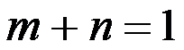
，那么代数式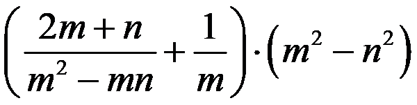
的值为（）A.-3B.-1C.1D.3【解析】：
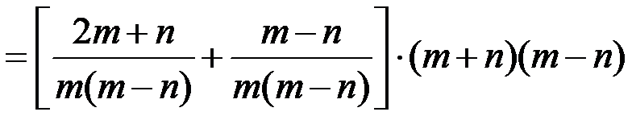
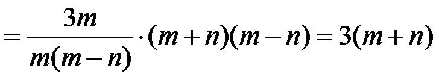
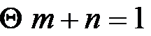
∴原式=3，故选D
7．用三个不等式
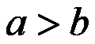
，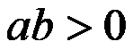
，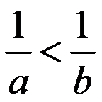
中的两个不等式作为题设，余下的一个不等式作为结论组成一个命题，组成真命题的个数为（）A.0B.1C.2D.3
【解析】本题共有3种命题：
命题①，如果
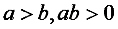
，那么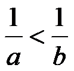
.∵
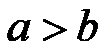
，∴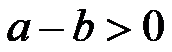
，∵ ，∴
，∴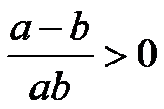
，整理得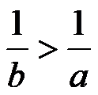
，∴该命题是真命题.命题②，如果
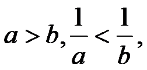
那么.∵
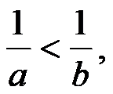
∴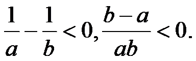
∵，∴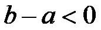
，∴.∴该命题为真命题.
命题③，如果
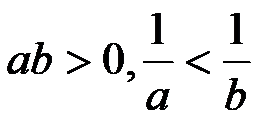
，那么.∵∴∵，∴，∴
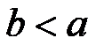
∴该命题为真命题.
故，选D
8． 某校共有200名学生，为了解本学期学生参加公益劳动的情况，收集了他们参加公益劳动时间（单位：小时）等数据，以下是根据数据绘制的统计图表的一部分．
学生 类型 人数 时间 | 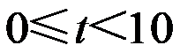 | |||||
学生类别 性别 | 男 | 7 | 31 | 25 | 30 | 4 |
女 | 8 | 29 | 26 | 32 | 8 | |
学段 | 初中 | 25 | 36 | 44 | 11 | |
高中 | ||||||
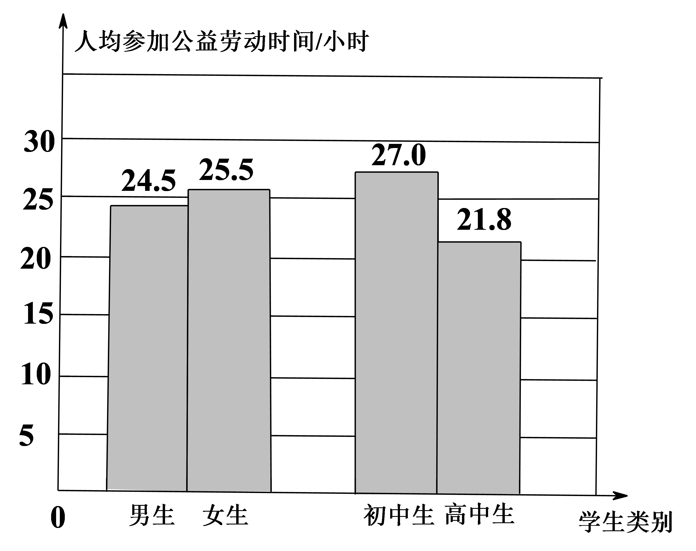
下面有四个推断：
①这200名学生参加公益劳动时间的平均数一定在24.5-25.5之间
②这200名学生参加公益劳动时间的中位数在20-30之间
③这200名学生中的初中生参加公益劳动时间的中位数一定在20-30之间
④这200名学生中的高中生参加公益劳动时间的中位数可能在20-30之间
所有合理推断的序号是（）
A.①③B.②④C.①②③D.①②③④
【解析】①由条形统计图可得男生人均参加公益劳动时间为24.5h，女生为25.5h，则平均数一定在24.5~25.5之间，故①正确
②由统计表类别栏计算可得，各时间段人数分别为15,60,51,62,12，则中位数在20~30之间，故②正确.
③由统计表计算可得，初中学段栏0≤t＜10的人数在0~15之间，当人数为0时，中位数在20~30之间；当人数为15时，中位数在20~30之间，故③正确.
④由统计表计算可得，高中学段栏各时间段人数分别为0~15，35,15，18,1.当
0≤t＜10时间段人数为0时，中位数在10~20之间；当0≤t＜10时间段人数为15时，中位数在10~20之间，故④错误
故，选C
二、填空题（本题共16分，每小题2分）